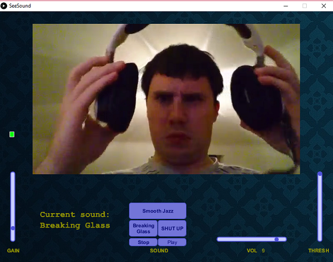
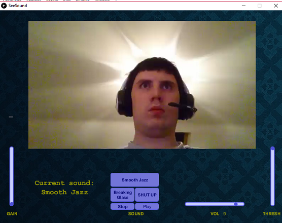
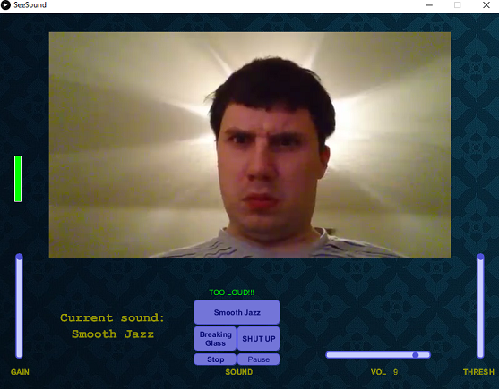

CS4358
Name: Stephen Caulfield, ID: 14151995
Description | Design | Evaluation | Summary | ZIP archive with source code and sounds

This application contains a 10 second video that responds to noise input from a microphone.
The microphone input can be adjusted by the GAIN Slider while the threshold of noise needed for the
video to respond can be adjusted with the THRESH slider. A noise will play if the noise goes above a certain
level and text saying "TOO LOUD!!!" will show. You can change the volume of the noise with the VOL slider.
You can play and pause the sound manually with the Play/Pause button. You can also stop and rewind the noise with the Stop button
You can choose between a selection of three sounds with the buttons above the play/pause and stop buttons. The current noise that is active
is displayed to the side of these buttons.
In this application, I wanted to have the screen to be filled but not cluttered, Most of the top the screen
is filled the video, the two sides of the video have the sliders for GAIN and THRESH. I feel like this creates a visual connection
between the two in our mind and reflects the fact that the two sliders have a symbiotic relationship. The bottom of the screen involves
objects that effects the sound caused by the a loud noise, the buttons and sliders are lined up with the GAIN and THRESH sliders
to create a consistent flow with all the controls so that the whole interface is neatly presented and consistent.
The Background is an image that I thought would overall compliment the appearance of the application while not being too distracting.


In this project I wanted to have an accessible interface that would be simple to use and clearly defined as to what each
function is supposed to do without being too overwhelming. I spent a good amount of time weeding out any bugs or errors that occured with project
like with the play/pause button where it would get stuck on playing a noise and you wouldn't be able to pause it nor could you play it when
it finished.
I felt that with this project, I was quite limited as to how much of anything I could have put in the interface. If I kept adding
different widgets and controls to the app, it would become cluttered and incomprehensible, I felt having a simplistic but consistent design was essential to
making this application usable in the first place, however I would've liked to create more functions to control what the video was doing
however, in the end, I ended up not putting any of that in. When I recorded the video on my phone, I realised that file size was really large
I couldn't find any free video compressing tools that wouldn't watermark the video so I recorded the video on Open Broadcast Software at lower bitrate
among other specifications to lower the file. It was an awkward non preferable method of lowering the file size but it worked in the end.